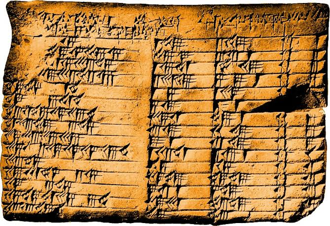
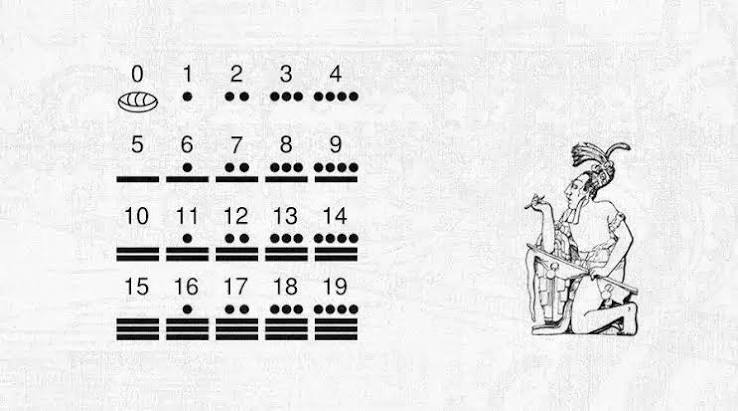
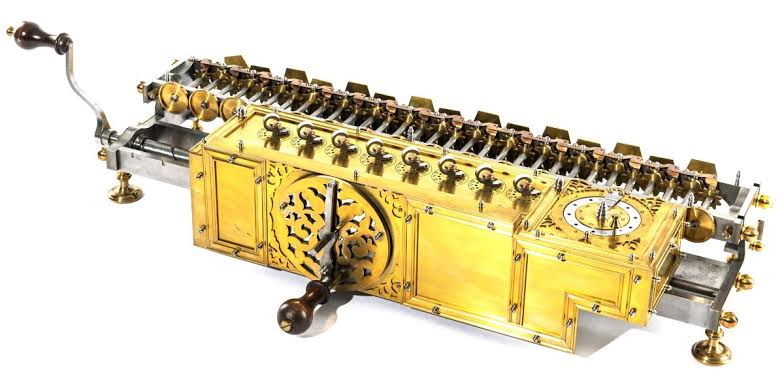

Mision
Facilitar el aprendizaje de los métodos numéricos mediante una página web educativa que reúna apuntes, ejemplos y procedimientos explicados paso a paso, para que los estudiantes comprendan y apliquen métodos como el de bisección y Newton-Raphson de manera clara y práctica
Vision
Ser una página web de referencia para estudiantes de métodos numéricos, reconocida por ofrecer contenido claro, organizado y accesible que facilite el aprendizaje autónomo, fomente el interés por las matemáticas y ayude a resolver problemas mediante herramientas numéricas.
Introducción
¿Qué son los métodos numéricos?
Son técnicas que nos permiten encontrar soluciones aproximadas a problemas matemáticos que serían muy difíciles, o incluso imposibles, de resolver directamente. Cuando las matemáticas exactas se vuelven demasiado complicadas, los métodos numéricos nos ayudan a encontrar una respuesta suficientemente cercana.
¿Pero por qué necesitamos aproximaciones?
Una empresa puede necesitar saber:
- ¿Cuántos productos fabricar?
- ¿Cómo se distribuirá el calor dentro de una máquina?
- ¿Cuánto peso puede soportar una estructura?
- ¿Cómo se comportará el clima?
- ¿Cómo puede un robot calcular dónde debe moverse?
Resolver estos problemas puede involucrar miles o millones de cálculos. Hacerlos manualmente sería prácticamente imposible. Ahí es donde las computadoras y los métodos numéricos se vuelven una combinación poderosa. Los métodos numéricos no consisten en encontrar una respuesta perfecta. Consisten en encontrar una respuesta lo suficientemente buena, de manera eficiente y sabiendo qué tan confiable es. Y eso es exactamente lo que muchas veces necesitamos en el mundo real. Porque cuando tienes un problema enorme, **no siempre necesitas una respuesta perfecta. A veces necesitas una respuesta rápida y precisa.
Ceros en una funcion
A lo largo de la historia, las matemáticas han evolucionado para resolver problemas relacionados con la naturaleza, la ingeniería, la física y muchas otras áreas. Uno de los problemas más importantes ha sido encontrar las soluciones de las ecuaciones, es decir, los valores que hacen que una expresión sea igual a cero. Con el desarrollo del álgebra y el cálculo, los matemáticos crearon diferentes métodos para encontrar estas soluciones. Sin embargo, muchas ecuaciones no pueden resolverse fácilmente mediante fórmulas exactas, por lo que surgieron los métodos numéricos, que permiten obtener soluciones aproximadas con un alto grado de precisión. En la actualidad, encontrar los ceros de una función es fundamental para resolver problemas científicos y de ingeniería, y constituye uno de los temas principales de los métodos numéricos.
- Matemáticas en la antigua Babilonia Alrededor de 2000-1600 a. C.
- 1000 a.C. Mayas y el "0"
- 250 a.C. Arquimedes con aportaciones en las matematicas y fisica
- 1623 Johannes Kepler Maquina para realizar calculos
- 1672 Gottfried Wilhelm Leibniz Primera calculadora



Metodo de Biseccion
El metodo de biseccion es un metodo numerico iterativo que permite encontrar una aproximacion de la raiz de una funcion. Consiste en dividir repetidamente un intervalo en dos partes hasta encontrar la raiz con la precision deseada.
Pasos para resolver el metodo de biseccion
- Definir la funcion: Identificar la funcion f(x) de la cual se desea encontrar una raiz, es decir, un valor de x para el que f(x) = 0.
-
Elegir el intervalo inicial:
Seleccionar dos valores, a y b, que delimiten el intervalo
donde se encuentra la raiz. La funcion debe ser continua
en el intervalo y los valores f(a) y f(b) deben tener
signos opuestos, es decir:
f(a) * f(b) < 0
-
Calcular el punto medio:
Obtener el punto medio del intervalo utilizando la formula:
xr = (a + b) / 2
- Evaluar la funcion: Sustituir el valor de xr en la funcion para calcular f(xr).
-
Determinar el nuevo intervalo:
Comparar los signos de f(a) y f(xr).
- Si f(a) * f(xr) < 0, la raiz esta en [a, xr]. Se actualiza b = xr.
- Si f(a) * f(xr) > 0, la raiz esta en [xr, b]. Se actualiza a = xr.
- Si f(xr) = 0, se encontro la raiz exacta y el procedimiento termina.
- Repetir el procedimiento: Calcular nuevamente el punto medio con el intervalo actualizado y repetir los pasos hasta alcanzar la precision deseada.
- Obtener la aproximacion final: Cuando se cumpla el criterio de paro, el ultimo punto medio calculado se toma como aproximacion de la raiz.
Ejemplo
Encontrar una raiz de la siguiente funcion:
f(x) = x^2 - 4
Elegimos el intervalo inicial [1, 3]. Evaluamos sus extremos:
- f(1) = 1^2 - 4 = -3
- f(3) = 3^2 - 4 = 5
Como los resultados tienen signos opuestos, podemos aplicar el metodo de biseccion.
Primera iteracion
Calculamos el punto medio:
xr = (1 + 3) / 2 = 2
Evaluamos la funcion:
f(2) = 2^2 - 4 = 0
Resultado: La raiz es x = 2. El procedimiento termina porque encontramos un valor que hace que la funcion sea igual a cero.
Diferencia entre metodo iterativo e interactivo
Un metodo iterativo es un procedimiento que se repite varias veces para aproximarse a una solucion. El metodo de biseccion pertenece a esta categoria.
En cambio, un sistema interactivo permite que el usuario introduzca datos y reciba una respuesta, como una calculadora dentro de una pagina web.